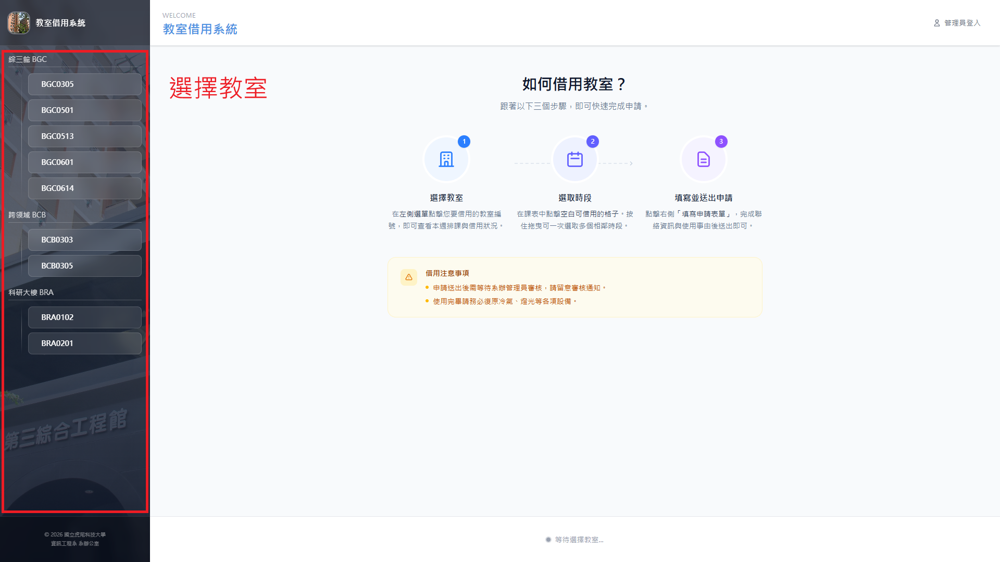
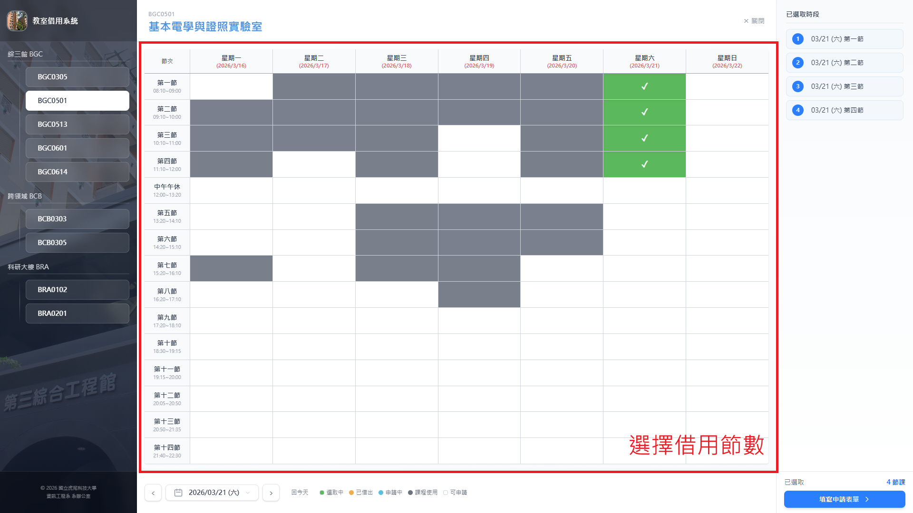
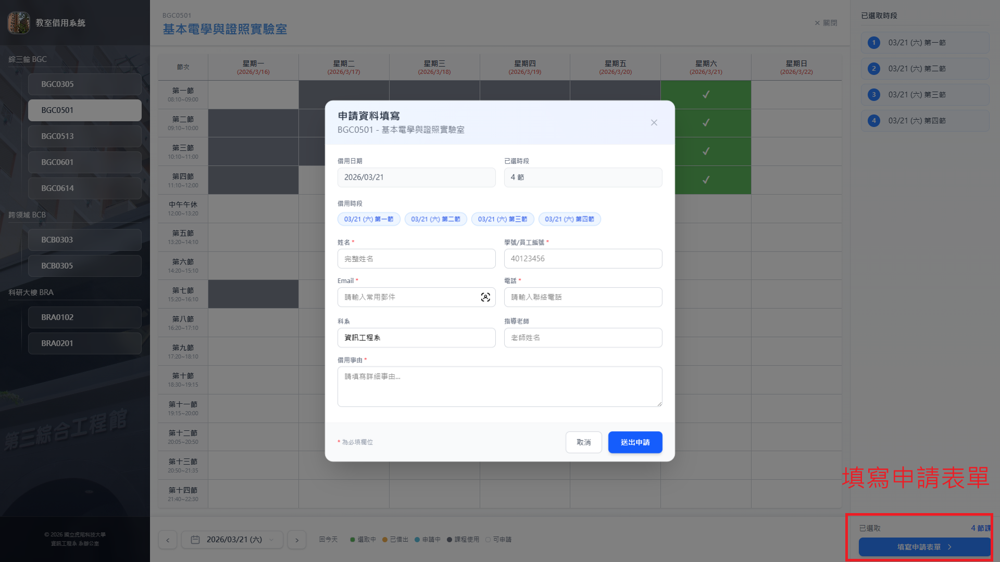

流程總覽
- 教室選擇
- 節數選擇
- 填寫表單
適用對象與權限
- 一般使用者可提出借用申請與取消自己的申請。
- 審核、核准或駁回屬於管理員權限。
- 若使用者被列入黑名單或停權中，將無法提出新申請。
1. 進入系統
開啟系統首頁後，畫面會顯示可借用教室與借用流程區塊。

2. 選擇教室與日期
- 先選擇欲借用的教室。
- 再選擇借用日期。
- 系統會依照課表、既有借用與可借用規則顯示可選時段。
若日期為不可借用日或時段已被占用，對應時段將無法勾選。
3. 選擇借用節數
- 於時段區塊勾選要借用的節數。
- 可一次選擇多個連續或不連續節數。

4. 填寫申請表單
請填寫以下資訊後送出：
- 申請人姓名
- 身分識別碼（學號或教職員編號）
- 聯絡信箱與電話
- 系所或單位
- 借用原因
- 指導老師（若有）

5. 送出後狀態
- 送出後，申請狀態為「待審核」。
- 審核完成後，會依結果更新為「已核准」或「已駁回」。
- 若申請者主動取消，狀態會更新為「已取消」。
6. 取消申請
- 系統提供簽章安全連結進行取消。
- 僅能取消尚未完成或仍可取消的申請。
- 取消後將釋放原先占用的時段。
常見注意事項
- 請確認填寫的聯絡資訊正確，避免通知無法送達。
- 同一時段若已被他人借用，系統會阻擋重複申請。
- 若系統顯示無可借用時段，請改選日期或其他教室。